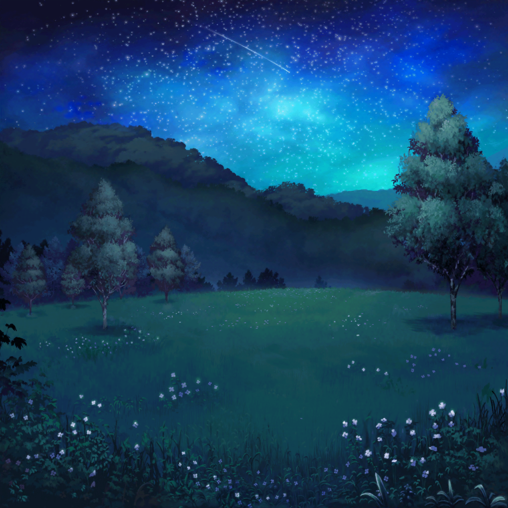

1時間後
蘭
……起きませんね
日菜
つぐちゃんは頑張ってたけど、
やっぱり睡魔には勝てなかったかー
蘭
そろそろ、
星を見に行くのにいい時間だと思うんですけど……
日菜
確かに、そんな時間だね！
ちょっと窓から見てみようか
日菜
さ～て、夜空はどんなふうに笑ってるかなー♪
どれどれー……
日菜
……わぁ～！ すっごーい！
みてみて、星がキラキラだよ！！
日菜
香澄ちゃん、つぐちゃん、こころちゃん！
起きて起きてー！！
香澄
う～ん……もう、食べられ……
蘭
もう、夢まで見てるし……
日菜
起きて起きて！
星、すっごくよく見えるよー！
日菜
あっ、流れ星！
こころ
え、流れ星？
蘭
やっと起きた
つぐみ
うぅ……眠い……
蘭
つぐみ、ほら、外見て。
眠気覚めるから
つぐみ
……外？
つぐみ
あ……星……！
香澄
ん……むにゃ……
香澄
……どしたの、みんな？
そんなに騒いで……？
窓の外に何が……
日菜
みて！ 流星群だよっ！！
香澄
！！
わぁ……すごい……！
日菜
せっかくだし、外で星を見ようよ！

香澄
わあ……っ！

香澄
見て！
空のどこ見ても星っ！！
……キレイだなあ……

つぐみ
すごい……！
蘭
ホントだ……！
こんなにたくさんの流れ星、はじめて見た
日菜
前に本で読んだんだけど、今輝いて見えてる星の光って、
何年も……うん、何百年、何千年も前のものなんだって
香澄
な、何千年……！？
日菜
うん、そうー。
あたし達はその輝きを今、こうして見てるんだよ
つぐみ
すごい……なんだか不思議ですね
こころ
素敵ね！
あの星たちからは、あたし達はどんなふうに見えてるのかしら？
香澄
星から見た私達、きっとすっごーーく未来人ですよね？
日菜
あははっ、確かにそうだね？
おーい、我々は未来の人間だぞー！ なんてねー
香澄
私達は過去の光を見てる……っていうことは、
もしかしたら、私が星の鼓動を感じた日の輝きを、
今、見てるかもしれないってことですよね！？
つぐみ
そうかも！
もし見えてたらすっごく素敵なことだね！
香澄
うん！
なんか、すごくいい！
過去から未来に繋がってるみたいで！
蘭
長い間、光り続ける星……か
蘭
……あたし達も、この星みたいに、
自分たちがここにいたって証、残して生きていけたらいいよね
蘭
何年も、何百年も消えない輝きを……
つぐみ
星みたいに何千年ってなると難しいかもしれないけど……
でも、ちゃんと残るよ、私達の輝き！
蘭
……そうだね。
あたし達の歌で、あたし達の存在を残せるように頑張ろう
香澄
じゃあ、何千年も輝き続けるぐらい最高の曲、作らなきゃ！
日菜
いつの間にランダムスター持ってきたの？
まさかここで弾いちゃう！？
香澄
はい！
今、最高に弾いちゃいたい気分です！
こころ
じゃあ一緒に歌いましょう！
香澄、演奏お願いね！
香澄
まっかせてー！
つぐみ
だ、ダメだよ。
こんな時間じゃ、管理人さんの迷惑になっちゃうっ
香澄
えー、でも今すっごく歌いたいし弾きたいの！
蘭
香澄、夜はやめておきなって
蘭
今は、歌よりも……星を楽しもうよ
つぐみ
そうだよ、せっかくの夜空なんだから。
ね？
香澄
……そっか。そうだね。
歌っちゃったら、星の鼓動聞こえないかもしれないもんね
日菜
それじゃあ、もうしばらく見てよっか。
この満点の星空を
こころ
そうね！ 楽しみましょう！！
星が降り注ぐ夜空を……！